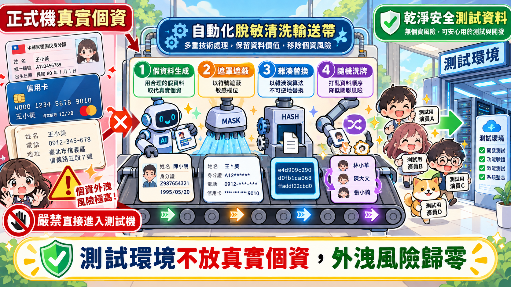

SSDLC 實戰指引
傳統 SDLC 1:1 映射
極度白話
一次驗收通過
給傳統 SDLC 工程師的 SSDLC 實戰生存指南
把官方整份《資訊系統安全開發與資安檢測作業規範》的官腔法條，徹底轉譯成寫 Code、跑 Sprint、修 Bug、準備驗收的工程師白話話術！
導讀 ｜ 心態建立與術語防卡關
🌱 導讀：SDLC vs SSDLC 到底差在哪？
各位寫 Code 的工程師，光是趕 Feature、解 Bug 就已經焦頭爛額了，突然聽到 PM 說「這專案要跑 SSDLC 喔」，心裡一定覺得又是找麻煩。
其實，傳統 SDLC 跟你平常在做的「需求 ➔ 設計 ➔ 開發 ➔ 測試 ➔ 驗收」完全沒變！ 差別只在於：以前資安都留到上線前最後一週才丟去掃描，結果幾百個紅字連發大家加班改到崩潰；SSDLC 是在每個階段順手做個小動作，把大魔王拆散！
❌ 傳統 SDLC 痛苦流：
寫功能 ➔ 測功能 ➔ 上線前被資安掃爆退件 ➔ 熬夜加班 3 星期修補救火。
✅ 現代 SSDLC 準時下班流：
寫 Code 順手做輸入驗證 (花 3 分鐘) ➔ 測試用假資料脫敏 ➔ 檢測一次通關安心請款。
▲ 圖解：寫 Code 順手花 3 分鐘補上防護，省下上線後 3 星期爆肝救火（直式與橫式自適應）
資安檢測 5 大名詞「超白話字典」
🔍 SAST（靜態源碼檢測 / 白箱）
白話比喻：看食譜抓錯
程式還沒跑起來（還沒下鍋煮），直接拿 Source Code 給工具一行一行看有沒有語法漏洞或寫死密碼。就像編輯改錯字。
💥 DAST（動態弱點掃描 / 黑箱）
白話比喻：在餐廳門口踹門、丟石頭
系統已經跑起來了，測試工具在外面亂打怪異封包、亂塞特殊符號，看你的網站會不會噴錯或吐出機密資料。
📦 SCA 與 SBOM（軟體組成分析與成分表）
白話比喻：查食品成分標籤與過期原料
檢查你 package.json 或 requirements.txt 引用的開源套件有沒有已知的毒輪子（CVE 漏洞）。SBOM 就是成分清單。
🕵️ 滲透測試（Penetration Testing）
白話比喻：請白帽駭客拿鐵撬做攻堅演練
真人資安專家親自上陣，專門用人類邏輯抓業務破綻（例如改網址偷偷看別人訂單、商品價格改成 1 元結帳）。
🎭 去識別化（脫敏 / Masking）
白話比喻：拍戲彩排拿假道具代幣，不拿真鈔
測試機絕不放真實個資！用假資料生成器或把個資遮罩成 A123***789，測試環境就算被攻破也零外洩風險。
對齊官方規範 ｜ 零、廠商遵循總則與法遵拘束力說明
⚖️ 零、合約與請款真相：為什麼資安沒過，會計就不能撥款？
很多工程師覺得「資安就只是跑個報告應付一下」。但現在政府專案的真相是：資安檢測沒過，會計是真的依法不能撥款的！
📌 工程會契約範本第 8 條（履約管理）與第 15 條（驗收）：
政府採購契約白紙黑字明定：資安檢測報告是「驗收前置必備交付物」。系統功能再漂亮，只要中高風險漏洞沒修完，驗收就是判定「不合格」。會計看到不合格就不敢撥款，PM 結不了案，全公司都在等你這張報告！
這不是機關找麻煩，是法律規定的交卷條件！
- 《資通安全管理法》第 9 條及施行細則第 7 條：法律明文規定公務機關委外辦理資通系統建置，機關負有「法定選任與監督義務」；受託廠商客製化開發必須出具安全性檢測證明。
- 承辦人的苦衷：承辦人如果不跟廠商要這份檢測合格證明就直接驗收付款，稽核查到他會被記過甚至移送法辦。所以請跟承辦人站在同一陣線，把報告準備齊全，大家好交差！
🔗 查看官方規範「零、遵循總則與法規條款」原文
對齊官方規範 ｜ 壹、官方依據文件與查驗表單下載庫
📚 壹、官方這堆 PDF 到底誰該看、要看哪一本？
專案開工時，機關常常打包丟來一堆官方標準，很多工程師直接看傻。這裡直接幫你把職責劃分清楚：
| 文件名稱 |
誰該負責看？ |
工程師的核心白話關注點 |
本地下載 |
| 附表九 分級原則 |
🏢 機關承辦自己填 |
工程師不用填！ 機關會評估機密性(C)、完整性(I)、可用性(A)衝擊，核定系統是「普、中、高」哪一級。拿到規格只要問 PM：「這套系統是哪一級？」 |
📥 附表九.pdf |
| 附表十 防護基準 |
💻 工程師必備寶典 |
最重要的一本！ 規定普級要測什麼、中高級必須強制做「源碼檢測」與「滲透測試」，檢測合格標準全看它。 |
📥 附表十.pdf |
| Web 安全指引與查檢表 |
💻 開發者施工標準 |
裡面寫了參數化查詢、防 XSS、安全標頭的寫法。驗收時需要填寫《附件1 Web應用程式安全查檢表》。 |
📥 Web指引.pdf |
| 防護基準檢核表 (.docx) |
📋 專案結案審查表 |
驗收時機關會打開這份 Word 檔逐條打勾，工程師要把掃描合格截圖貼進去。 |
📝 檢核表.docx |
🔗 查看官方規範「壹、官方依據文件下載庫」原文
對齊官方規範 ｜ 貳、專案執行計畫與管理規範
🗓️ 貳、Sprint 計畫與 1 小時通報：開工前要加哪些卡片？
不要以為資安是等寫完 Code 才做的事。在 Sprint Planning 或開 WBS（工作分解結構）時，就必須把工作排進去：
1. 在你的 Jira / WBS 裡多加幾張卡片
以前你在 Jira 開 Ticket 叫做「實作會員登入 API」。在政府 SSDLC 規範下，要拆成以下子任務：
[Feature] 實作登入 API 業務邏輯[Security] 實作輸入欄位白名單驗證（防 SQLi / XSS）[Security] 密碼使用 Bcrypt 加鹽雜湊儲存，Token 外置至 .env[Security] 產出 Sprint 相依套件 SBOM 成分表清單
2. RACI 分工矩陣：嚴禁「自己寫 Code 自己審查」！
政府稽核最討厭「開發兼檢測」違反職能分工（SoD）：
- R (Responsible) 執行者：工程師，負責寫 Code 並依照安全指引撰寫防禦。
- A (Accountable) 當責者：PM 或技術主管，負責審核 PR、確認掃描報告已歸零。
- C (Consulted) 諮詢者：資安架構師，不知道加密怎麼選就問他。
- I (Informed) 知會者：機關承辦人，版本釋出時通知他。
3. 遇到資安事故的「1 小時緊急通報 SOP」
🚨 萬一發現 Token 外洩或測試伺服器被駭，絕對嚴禁私下掩蓋！
合約規範知情後 1 小時內必須通報機關窗口（先講發生什麼事、正在隔離調查），4 小時內提送初步處置方案，72 小時內繳交根本原因分析（RCA）報告。及時通報大家一起處理，知情不報被抓到會直接被列入不良廠商！
flowchart TD
A[發現資安異常或密鑰外洩] --> B[1 小時內：緊急通報 PM 與機關窗口]
B --> C[4 小時內：隔離受害伺服器並撤銷外洩金鑰]
C --> D[72 小時內：提送根本原因分析 RCA 與代碼修補報告]
style A fill:#fee2e2,stroke:#ef4444,stroke-width:2px
style B fill:#fef3c7,stroke:#f59e0b,stroke-width:2px
style D fill:#dcfce7,stroke:#10b981,stroke-width:2px
🔗 查看官方規範「貳、專案執行計畫與管理規範」原文
對齊官方規範 ｜ 參、安全程式開發階段實作規範
🛡️ 參、Coding 階段實戰：工程師的防禦四道門禁與 SBOM
進入寫程式階段，我們直接對齊國際最新 OWASP Top 10:2025 標準，直接看怎麼寫才安全：
▲ 圖解：輸入驗證門、權限鑰匙、金庫密鑰、套件體檢站（防禦四道門禁）
門禁一：輸入驗證（A05 注入攻擊防禦）
// 收到前端 username = "admin' --"
const query = `SELECT * FROM users WHERE username = '${req.body.username}'`;
// 密碼檢查直接被 -- 註解掉，任何人都能用 admin 登入！
// 1. Prepared Statement 參數化（資料與指令徹底分離）
const query = 'SELECT * FROM users WHERE username = ?';
await db.execute(query, [req.body.username]);
// 2. 或直接使用 ORM（Prisma / TypeORM）
const user = await prisma.user.findUnique({
where: { username: req.body.username }
});
門禁二：權限檢查與防範 SSRF（A01 越權存取）
- 後端必須雙重鎖定（防 BOLA / IDOR）：不要只查
WHERE id = :order_id，必須永遠加上 WHERE id = :order_id AND user_id = :current_user_id。
- 防範伺服端請求偽造 (SSRF)：若伺服器有幫抓網頁縮圖的功能，嚴格禁止打內網 IP（
127.0.0.1, 10.x, 192.168.x, 169.254.169.254），必須設定 URL 白名單。
門禁三：密鑰不落地與安全組態（A02 / A04）
- 密碼存儲：嚴禁明文或 MD5，必須使用
bcrypt、Argon2id 加鹽雜湊。
- 憑證管理：嚴禁在程式碼中 Hardcode API Key，全部抽離至
.env 並設定 .gitignore。
- HTTP 安全標頭：在 Nginx 或 Node.js 啟用
helmet，補齊 Strict-Transport-Security (HSTS)、X-Content-Type-Options: nosniff 與 CSP。
- A10 例外處理：設定全域 Try-Catch，500 錯誤頁面絕不把 Stack Trace 或資料庫語法印給前端。
門禁四：軟體供應鏈安全與產出 SBOM 清單
政府標案現在要求交出標準格式（SPDX / CycloneDX）的 SBOM（軟體物料清單），並且嚴格禁止使用大陸廠牌資通訊產品與相依套件：
# 1. 日常套件安全體檢：
npm audit
pip-audit
# 2. 一行指令產出標準 CycloneDX / SPDX 格式之 SBOM 檔案：
# 使用 Syft 掃描當前專案目錄並輸出 JSON：
syft dir:. -o cyclonedx-json=sbom.json
🔗 查看官方規範「參、安全程式開發實作」原文
對齊官方規範 ｜ 肆、功能與系統測試階段規範
🧪 肆、Testing 階段防線：千萬別把正式機資料直接 dump 回來！
很多工程師圖方便直接下 pg_dump 把正式 DB 倒回測試機。這是極其危險的行為！測試機防護通常較弱，一旦被駭就是百萬筆個資外洩，踩中《個人資料保護法》重大紅線。

▲ 圖解：正式資料嚴禁直倒測試機！四道清洗工序讓測試環境零風險
測試資料去識別化（脫敏）四大招
🟢 招式一：假資料生成器（首選推薦）
使用 faker-js 或 Python Faker，無中生有產生假姓名與台灣手機。完全不碰真實個資，外洩風險真正為零！
🟢 招式二：遮罩掩蓋（Masking）
身分證遮蔽為 A123***789，保留長度與版面排版測試便利。
🟡 招式三：雜湊代幣（Tokenization）
把姓名與 Email 轉成不可逆雜湊，適合測試用戶重複登入唯一性。
🟡 招式四：隨機打散（Shuffling）
洗牌打散欄位，A 先生配上 B 小姐的電話與地址。
多測測「壞蛋路徑」（Negative Testing）
- 超長字串：姓名欄位狂塞 10 萬字，測看看記憶體會不會被塞爆導致 DoS 服務中斷。
- 特殊字元：狂塞
' " < > ; \0，看系統會不會原封不動噴出資料庫底層錯誤。
- 邊界負數：電商購買數量輸入
-1，看會不會不扣錢反而把負金額「退錢」給你！
硬碟退租抹除：NIST SP 800-88 清除標準
專案驗收完成後，開發雲端伺服器退租或測試硬碟汰除前，必須依 NIST SP 800-88 或 DoD 5220.22-M 標準執行安全抹除（不可只是 Shift+Delete），並由主管簽署《儲存媒體資料抹除銷毀切結書》。
🔗 查看官方規範「肆、功能與系統測試規範」原文
對齊官方規範 ｜ 伍、資訊安全技術檢測作業規範
👾 伍、驗收前三大考：白箱、黑箱、滲透測試通關秘笈
這三關是能否順利結案的硬指標，搞懂考題就不會慌：
▲ 圖解：白箱源碼檢測、黑箱弱點掃描、真人滲透測試三大檢測全貌
flowchart TD
A[程式碼開發完成] --> B(1. SAST 白箱源碼檢測)
B -->|High/Critical 歸零| C(2. DAST 黑箱動態弱掃)
C -->|放行掃描IP + 0漏洞| D(3. Penetration Testing 滲透測試)
D -->|修補業務邏輯越權| E[4. 產出報告與檢核表驗收]
style B fill:#eff6ff,stroke:#3b82f6,stroke-width:2px
style C fill:#fef3c7,stroke:#f59e0b,stroke-width:2px
style D fill:#fce7f3,stroke:#ec4899,stroke-width:2px
style E fill:#dcfce7,stroke:#10b981,stroke-width:2px
考科一：SAST 白箱源碼檢測（Fortify / Checkmarx）
- 通關標準：High / Critical 風險必須 100% 修補歸零，Medium 依約修補。
- 如何寫出讓審查員秒簽核的「誤判報告（False Positive）」？
工具很常誤判。若要提誤判，千萬不要只寫「這不會發生」！
請清楚附上：(1) 變數來源資料流、(2) 程式碼所在行號、(3) 前一層已有限制理由。
範例：「第 45 行工具誤報 SQLi，但此變數在第 20 行已使用 Regex ^\d+$ 限制為純數字，無法注入惡意字串，故申請誤判除外。」 審查員看到才敢放心蓋章。
考科二：DAST 黑箱弱點掃描（AppScan / WebInspect / ZAP）
- ⚠️ 開發者必做前置：測試環境請將掃描 IP 加入 WAF 白名單！
黑箱掃描頻率極高，如果防火牆沒放行，掃描機被 WAF 擋住會跑出「0 漏洞」假象。這不是系統安全，稽核一看就知道是假的，會要求退件重測浪費時間！
- 提供 API 規格：前後端分離架構請提供 OpenAPI / Swagger 文件，讓爬蟲知道所有 API 端點路徑。
考科三：真人滲透測試（白帽駭客攻堅）
- 常見死穴：駭客專打工具找不到的「業務邏輯漏洞」（如越權偷看他人訂單、篡改結帳金額）。
- 修補與複測技巧：舉一反三！ 駭客報 API-A 有越權，你要全面清查整套系統的 API。修補後先用 Postman 竄改參數自測確認回傳
403 Forbidden，把截圖附進複測申請單，加速驗收！
🔗 查看官方規範「伍、資安技術檢測作業」原文
對齊官方規範 ｜ 陸、檢測交付產出物審查與驗收門檻
📦 陸、結案交卷清單：驗收那天到底要交出哪些檔案？
不要等到驗收前一天才問 PM 要交什麼。請在結案前逐一備妥以下 6 份核心文件：
⚖️ 違約與不良廠商處理原則：
依工程會採購契約規定，未達修補標準者依法不得申報驗收付款；因而延誤履約期限者，每日依約計課逾期違約金。
若因隱匿漏洞或檢測不實導致上線後遭入侵外洩，機關得依《政府採購法》第 101 條將廠商刊登為不良廠商，停權 1 至 3 年不得投標政府標案！
🔗 查看官方規範「陸、交付產出物查驗與違約處理」原文